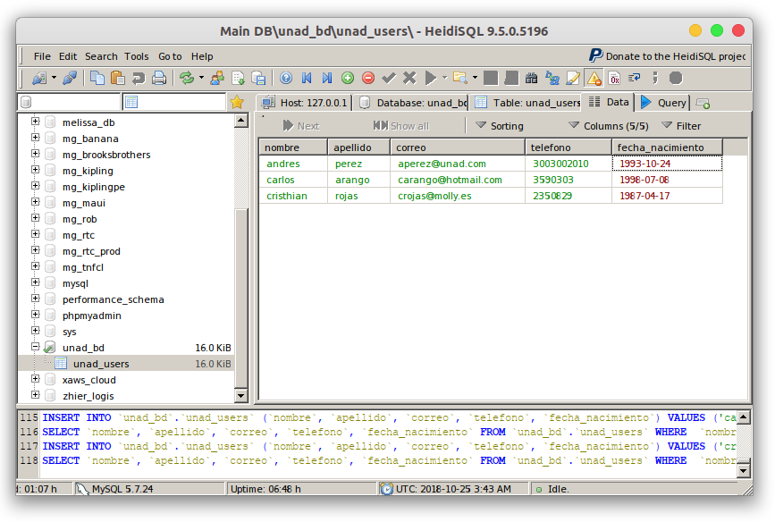
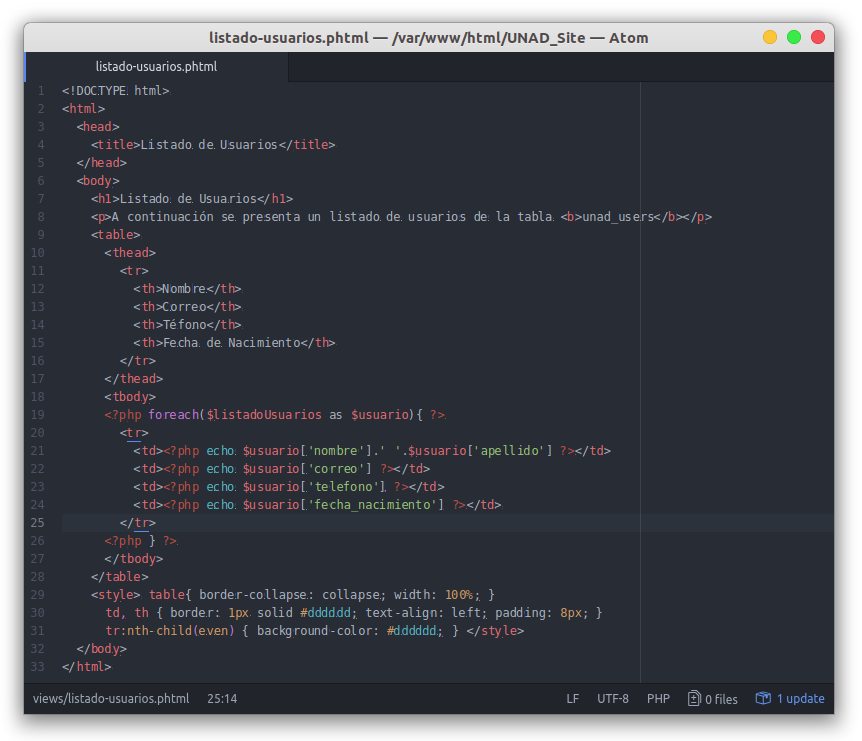

Primero que nada, si creamos esta vista y la ejecutamos, no va a mostrar nada, por lo que agregaremos un par de datos a nuestra tabla unad_users, por lo cual, accederemos a HeidiSQL, entramos a nuestra base de datos, vamos a la tabla unad_users y damos clic en la pestaña "Data", luego en el signo +

¡Perfecto! Hemos agregado 3 filas a nuestra tabla "unad_users", ahora en HTML crearemos una tabla y la llenaremos con esta información que vamos a extraer.
En resumen:
- Creamos el HTML base con una "table"
- Dentro del "tbody" vamos a agregar un ciclo PHP que hará repetir a nuestra variable $listadoUsuarios del controlador.
- Este ciclo va a repetir un "tr" (que es una fila en HTML) y dentro del "tr" agregaremos "td" para agregar una celda, dentro de esta, agregaremos los nombres de columna de nuestra consulta.

Ya con esto tendremos terminado nuestro flujo de MVC.